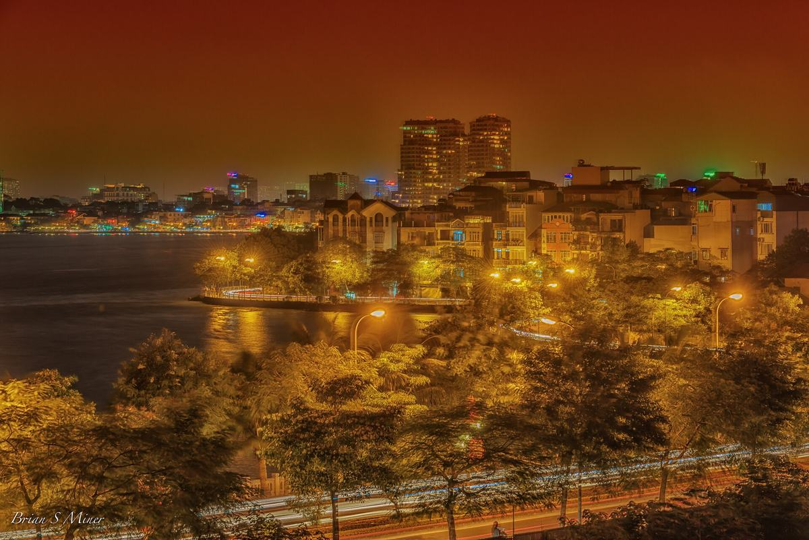
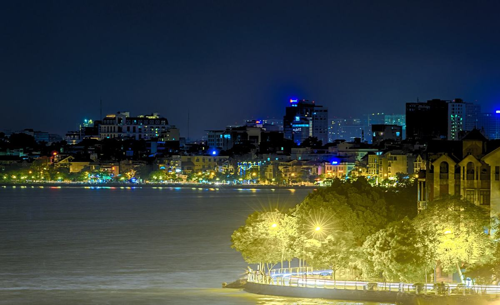

2020 — 2023 · Berck
Baccalauréat général
Lycée Jan Lavezzari
DépartsDeparturesВылеты
Prochain départ MASTER CLOUD & DEVOPS
Étudiant en informatique · L3 Lille × Hanoï
Voir le tableau
Je m'intéresse à ce qui se passe une fois le code écrit : le déployer, le surveiller, le faire tenir quand le trafic augmente.
Je suis en troisième année de licence d'informatique, en double diplôme entre l'Université de Lille et l'USTH, à Hanoï.
C'est en cours de réseaux que j'ai compris que l'infrastructure m'attirait plus que l'application elle-même. Je vise un master orienté cloud et DevOps.
2020 — 2023 · Berck
Lycée Jan Lavezzari

2023 — 2024 · Amiens
Lycée Louis Thuillier

2024 — 2026 · Lille
Université de Lille

2026 — 2027 · Hanoï · en ce moment
Université de Lille × USTH
2027 —
Candidatures en préparation
En dehors de l'écran, je fais de la photo. Ces images sont provisoires, les miennes arrivent.




À chaque git push, ce site se reconstruit, se teste et se publie tout seul.
Écrit à la main, sans framework. GitHub Actions valide le HTML, construit une image Docker (nginx sans les droits root, conteneur en lecture seule), la teste, la publie sur ghcr.io, puis met la page en ligne sur GitHub Pages.
Chaque image porte le hash de son commit. Version affichée : copie locale.
Une question sur mon parcours, un stage, un projet ? Écrivez-moi.